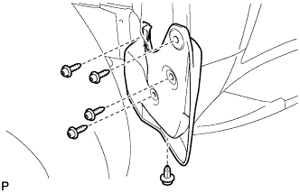
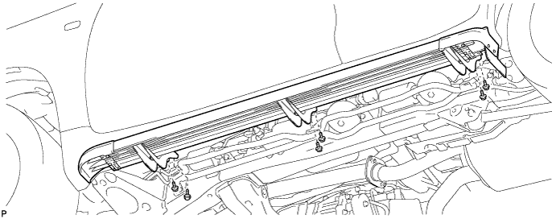
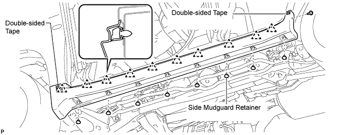
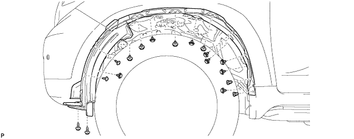
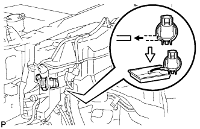
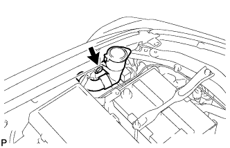
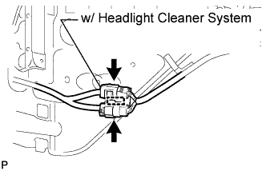
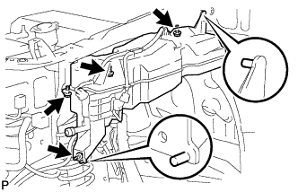
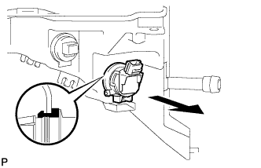

WASHER MOTOR (for Front Side) > REMOVAL |
| 1. REMOVE FRONT FENDER MUDGUARD LH |
 |
Remove the clip.
Using a T30 "TORX" socket, remove the 4 screws and mudguard.
| 2. REMOVE SIDE STEP ASSEMBLY LH |
Remove the 6 bolts and side step.

| 3. REMOVE BODY ROCKER PANEL MOULDING ASSEMBLY LH |
Remove the 8 side mudguard retainers and screw.
Detach the 10 clips and remove the rocker panel moulding.

| 4. REMOVE FRONT FENDER LINER LH |
Remove the 2 screws.
Using a T30 "TORX" socket, remove the 2 screws.
Using a clip remover, remove the 2 grommets, 12 clips and fender liner.

| 5. DRAIN WASHER FLUID |
 |
Remove the washer hose from the windshield washer motor and pump, and drain the washer fluid.
| 6. REMOVE WASHER INLET SUB-ASSEMBLY |
 |
Using a clip remover, remove the clip and washer inlet.
| 7. REMOVE WINDSHIELD WASHER JAR ASSEMBLY |
 |
w/ Headlight Cleaner System:
Detach the clamp.
Disconnect the 2 connectors.
Disconnect the headlight cleaner hose.
w/o Headlight Cleaner System:
Detach the clamp.
Disconnect the connector.
 |
Remove the 4 bolts. Then remove the windshield washer jar.
| 8. REMOVE WINDSHIELD WASHER MOTOR AND PUMP ASSEMBLY |
 |
Remove the windshield washer motor and pump assembly together with the gasket in the direction shown in the illustration.